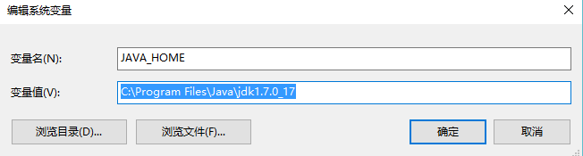
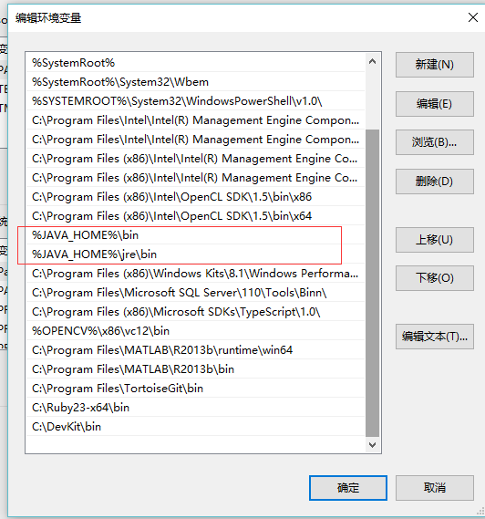
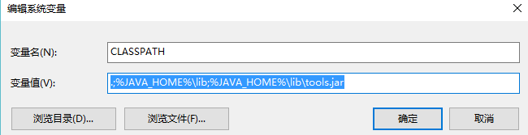
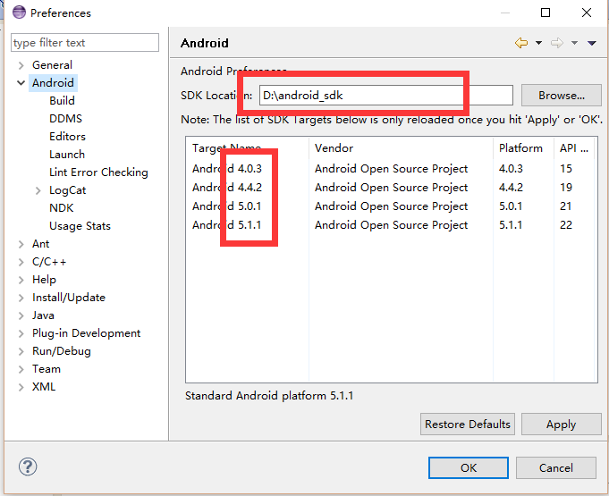
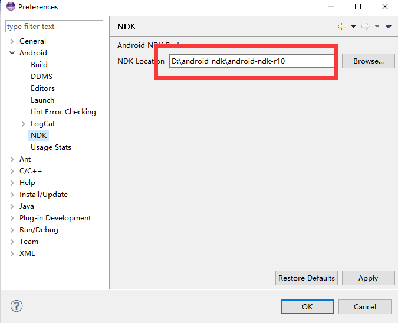
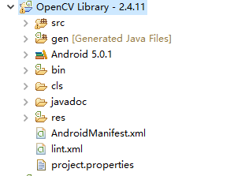
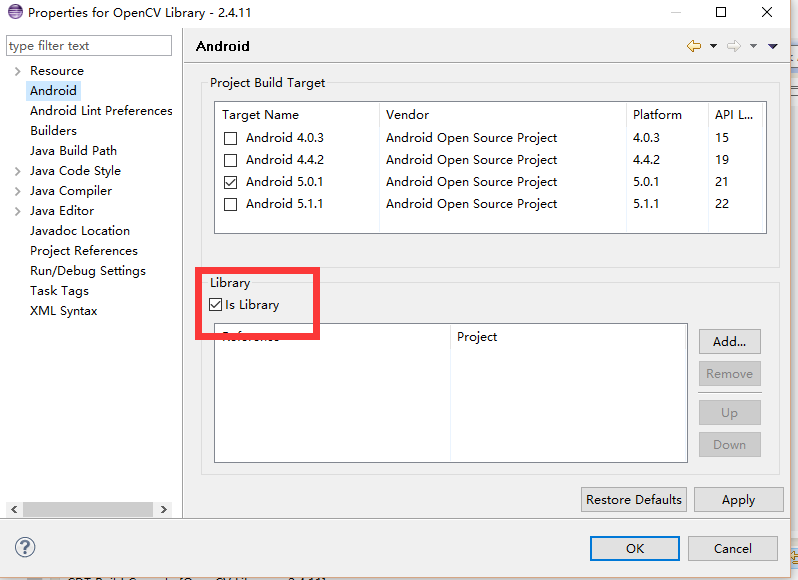
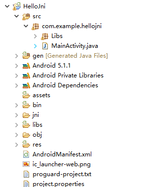
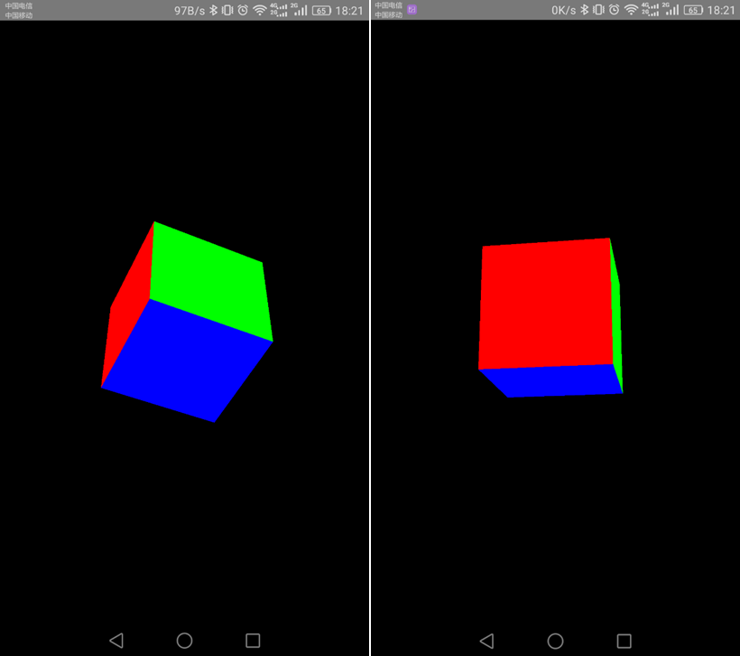
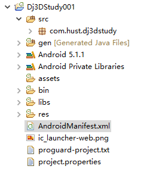

Members:
牛群杰 罗攀 陈福坤 李国胜
Introduction
In the field of technology and image processing, hand/finger tracking is a high-resolution technique that is employed to know the consecutive position of the hands/fingers of the user and hence represent objects in 3D. In addition to that, the hand/finger tracking technique is used as a tool of the computer, acting as an external device in our computer, similar to a keyboard and a mouse.
Time Line
1.Creat github homepage
2.Android环境搭建
To Do List
1.分配任务，创建项目链接
2.Android环境搭建
3.阅读参考文献，寻找合适算法，确定待实现方案
Reference
[1]. Fast and Robust Hand Tracking Using Detection-Guided Optimization, In CVPR, 2015.
[2]. Accurate, Robust, and Flexible Real-time Hand Tracking, In CHI, 2015.
[3]. Full DOF tracking of a hand interaction with an object by modeling occlusions and physical constraints, In ICCV, 2011.
Corresponding Video Links
http://v.youku.com/v_show/id_XNzk2NDM4NDIw.html?from=s1.8-1-1.2
https://www.youtube.com/watch?v=FNQbGJyGAs8 (YouTube video)
https://www.youtube.com/watch?v=xML2S6bvMwI(YouTube video)
https://www.youtube.com/watch?v=eXktGa16yXk (YouTube video)
https://www.youtube.com/watch?v=N3ffgj1bBGw (YouTube video)
UPDATE2：Android环境搭建
随着移动互联网的火热发展和移动端迅速崛起，Android的应用开发和IOS应用开发是非常有必要了解学习的。
本文就是为了从最基本的开始介绍Android开发。在整个文档中，我会简单介绍环境搭建、最小案例演示、JNI开发和集成OpenCV。
工具
⒈JDK
⒉Eclipse
⒊Android SDK
⒋Android NDK
⒌OpenCV-2.4.11的AndroidSDK
1. JDK安装和Java环境配置
下载地址：http://www.oracle.com/technetwork/java/javase/downloads/index.html
环境配置，截图如下：
JAVA_HOME

PATH

CLASSPATH

Win+R，输入cmd，输入java 和 javac 检测环境是否配置成功。成功的话会出现很多输出
2. Eclipse下载安装
下载地址：http://www.eclipse.org/downloads/
选择适用于Android开发的IDE
然后像普通的windows软件一样的安装。图片就不截了。
3. Android相关下载
在这里，我不得不说一句。墙内的我们，学个开发就这么难吗？
还有国内有个不错的论坛，所有android需要的都可以去那里下载：
网址：http://www.apkbus.com/thread-252748-1-1.html
还有就是，作为新手。我建议，直接下载我给的网址里面的一个名叫ADT Bundle的文件，也就是说不需要去进行第二步。下载完成以后，解压就可以直接使用。不过，这个集成好的里面的Android版本不是最新的，并且如果想更新的话也是相当的麻烦。个人建议不要更新。凑合用，等理解深刻了，完整的走一趟安装流程。
4. Android SDK和NDK配置
打开Eclipse，设置工作空间。
Window—>Preference看如下截图：


5. 配置OpenCV-2.4.11
下载地址：http://opencv.org/downloads.html
选择相应的版本。
解压文件，然后把文件里面的一个名叫sdk的文件夹复制到工作空间。
然后，导入这个sdk项目到Eclipse作为一个library。


6. 创建一个简单地使用OPenCV的本地代码实现图片灰度化的项目。

7. 备注
后续更新，敬请期待。
UPDATE3:3D动态立体显示
打开Eclipse，创建一个项目，取名Dj3DStudy001，采用Android5.1，也就是Android API 22版本。向下兼容到Android API 14.
完成的效果如下图：（本来是一个动画，但是手机运行之后，录制动画太麻烦，就弄一组图算了）

项目架构截图：

代码
1、完成3D立方体的绘制，代码注释
package com.hust.dj3dstudy;
import java.nio.ByteBuffer;
import java.nio.ByteOrder
import java.nio.FloatBuffer;
import javax.microedition.khronos.egl.EGLConfig;
import javax.microedition.khronos.opengles.GL10;
import android.opengl.GLSurfaceView.Renderer;
import android.opengl.GLU;
public class CubeRenderer implements Renderer {
//调整这个小说就可以调整这个立方体的大小。
float box[] = new float[] {
// FRONT
-0.25f, -0.25f, 0.25f,
0.25f, -0.25f, 0.25f,
-0.25f, 0.25f, 0.25f,
0.25f, 0.25f, 0.25f,
// BACK
-0.25f, -0.25f, -0.25f,
-0.25f, 0.25f, -0.25f,
0.25f, -0.25f, -0.25f,
0.25f, 0.25f, -0.25f,
// LEFT
-0.25f, -0.25f, 0.25f,
-0.25f, 0.25f, 0.25f,
-0.25f, -0.25f, -0.25f,
-0.25f, 0.25f, -0.25f,
// RIGHT
0.25f, -0.25f, -0.25f,
0.25f, 0.25f, -0.25f,
0.25f, -0.25f, 0.25f,
0.25f,0.25f,0.25f,
// TOP
-0.25f, 0.25f, 0.25f,
0.25f, 0.25f, 0.25f,
-0.25f, 0.25f, -0.25f,
0.25f,0.25f, -0.25f,
// BOTTOM
-0.25f, -0.25f, 0.25f,
-0.25f, -0.25f, -0.25f,
0.25f, -0.25f, 0.25f,
0.25f,-0.25f, -0.25f, };
FloatBuffer cubeBuff;
float xrot = 0.0f;
float yrot = 0.0f;
/**
* 将float数组转换存储在字节缓冲数组
*
* @param arr
* @return
*/
public FloatBuffer makeFloatBuffer(float[] arr) {
ByteBuffer bb = ByteBuffer.allocateDirect(arr.length * 4);// 分配缓冲空间，一个float占4个字节
bb.order(ByteOrder.nativeOrder()); // 设置字节顺序，
// 其中ByteOrder.nativeOrder()是获取本机字节顺序
FloatBuffer fb = bb.asFloatBuffer(); // 转换为float型
fb.put(arr); // 添加数据
fb.position(0); // 设置数组的起始位置
return fb;
}
public CubeRenderer() {
cubeBuff = makeFloatBuffer(box);// 转换float数组
}
protected void init(GL10 gl) {
gl.glClearColor(0.0f, 0.0f, 0.0f, 1.0f);// 设置清屏时背景的颜色，R，G，B，A
gl.glEnable(GL10.GL_DEPTH_TEST); // 启用深度缓存
gl.glEnable(GL10.GL_CULL_FACE); // 启用背面剪裁
gl.glClearDepthf(1.0f); // 设置深度缓存值
gl.glDepthFunc(GL10.GL_LEQUAL); // 设置深度缓存比较函数，GL_LEQUAL表示新的像素的深度缓存值小于等于当前像素的深度缓存值（通过gl.glClearDepthf(1.0f)设置）时通过深度测试
gl.glShadeModel(GL10.GL_SMOOTH);// 设置阴影模式GL_SMOOTH
}
@Override
public void onSurfaceCreated(GL10 gl, EGLConfig config) {
init(gl);
}
@Override
public void onSurfaceChanged(GL10 gl, int w, int h) {
gl.glViewport(0, 0, w, h); // 设置视窗
gl.glMatrixMode(GL10.GL_PROJECTION); // 设置投影矩阵
gl.glLoadIdentity(); // 设置矩阵为单位矩阵，相当于重置矩阵
GLU.gluPerspective(gl, 45.0f, ((float) w) / h, 0.1f, 10f);// 设置透视范围
}
@Override
public void onDrawFrame(GL10 gl) {
gl.glClear(GL10.GL_COLOR_BUFFER_BIT | GL10.GL_DEPTH_BUFFER_BIT);// 清除屏幕和深度缓存
gl.glMatrixMode(GL10.GL_MODELVIEW); // 切换至模型观察矩阵
gl.glLoadIdentity();// 重置当前的模型观察矩阵
GLU.gluLookAt(gl, 0, 0, 3, 0, 0, 0, 0, 1, 0);// 设置视点和模型中心位置
gl.glVertexPointer(3, GL10.GL_FLOAT, 0, cubeBuff);// 设置顶点数据
gl.glEnableClientState(GL10.GL_VERTEX_ARRAY);
gl.glRotatef(xrot, 1, 0, 0); // 绕着(0,0,0)与(1,0,0)即x轴旋转
gl.glRotatef(yrot, 0, 1, 0);
gl.glColor4f(1.0f, 0, 0, 1.0f); // 设置颜色，红色
gl.glDrawArrays(GL10.GL_TRIANGLE_STRIP, 0, 4); // 绘制正方型FRONT面
gl.glDrawArrays(GL10.GL_TRIANGLE_STRIP, 4, 4);
gl.glColor4f(0, 1.0f, 0, 1.0f);
gl.glDrawArrays(GL10.GL_TRIANGLE_STRIP, 8, 4);
gl.glDrawArrays(GL10.GL_TRIANGLE_STRIP, 12, 4);
gl.glColor4f(0, 0, 1.0f, 1.0f);
gl.glDrawArrays(GL10.GL_TRIANGLE_STRIP, 16, 4);
gl.glDrawArrays(GL10.GL_TRIANGLE_STRIP, 20, 4);
xrot += 1.0f;
yrot += 0.5f;
}
}
2、主页显示
package com.hust.dj3dstudy;
import android.app.Activity;
import android.opengl.GLSurfaceView;
import android.os.Bundle;
import android.view.Window;
public class MainActivity extends Activity {
CubeRenderer mCubeRenderer; // 我们自定义的立方体Renderer
@Override
protected void onCreate(Bundle savedInstanceState) {
super.onCreate(savedInstanceState);
requestWindowFeature(Window.FEATURE_NO_TITLE); // 去掉标题
GLSurfaceView GLView = new GLSurfaceView(this); // 创建一个GLSurfaceView
mCubeRenderer = new CubeRenderer();
GLView.setRenderer(mCubeRenderer);
setContentView(GLView);
}
}